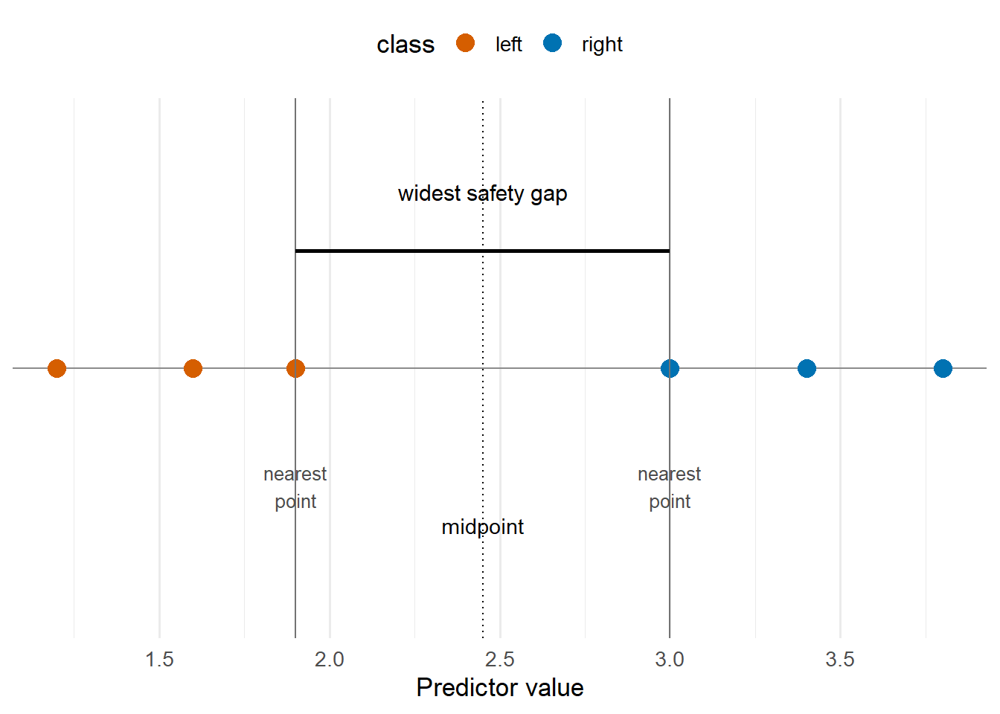
3 Maximal Margin Classifier
The maximal margin classifier is the boundary that defines the classification rule which
- correctly classifies all of the training observations
- has the largest gap between the boundary and any of the observations.
Hence, the use of this classifier requires that the observations are separable. We will build up the intuition for the classifier from 1D to \(p\)-dimensions.
3.1 A 1D Opener
3.1.1 Intuition
Let us begin with the simplest binary classification case; one predictor and two classes that can be perfectly separated on a line. For this reason, consider the Figure 3.1. Since the groups on the left and right are perfectly separated; then many boundaries could correctly classify each observation in the training data. In fact, there are infinitely many since any boundary \(c \in [-1.9, 3.0]\) would perfectly separate the groups. A natural question arises: Which threshold should we choose?
The SVM approach is to choose the boundary that is as far as possible from the nearest point in either class.
3.1.2 Formal Statement
When we talk about finding a boundary to separate the observations, we are implicitly trying to make a decision rule. We want to define some value \(c\) such that \[\begin{equation} \begin{cases} x_i \leq c \hskip{2em} x_i\rightarrow \text{group 1}\\ x_i > c \hskip{2em} x_i\rightarrow \text{group 2} \end{cases} \end{equation}\]
In one dimension, the decision boundary is just the value \(c\) which is a point on \(\mathbb{R}\). Trivially, if the the closest points from the two classes are at \(l\) and \(u\), then the maximal-margin boundary, \(c\), lies halfway between them such that
\[ c = \frac{l + u}{2}. \]
This is the simplest version of the SVM idea. Such a decision rule
- correctly classifies
- keeps the boundary far from the training data
- lets the nearest observations determine the rule
3.2 Building the mechanics in 2D
Extending the predictor set to 2-dimensions means that the decision boundary is a line instead of a point. We continue with the natural extension of the ideas established in the 1D case without restricting ourselves to just two dimensions. This will allow us to build intuition in a feasible manner.
3.2.1 Intuition
Once again, consider the example illustrated by Figure 3.2. It is clear that there are infinitely-many lines that can separate the classes of the training data perfectly. The maximal margin classifier chooses the line with the widest empty strip around it. That strip is bounded by two parallel lines touching the nearest observations in each class.
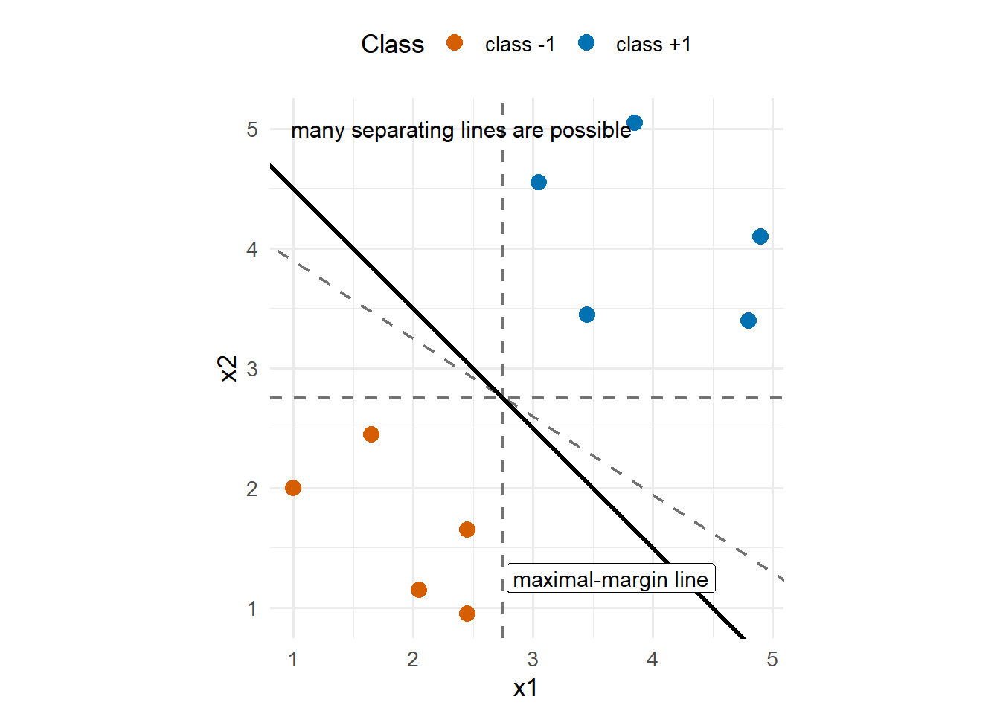
Therefore, the maximal margin classifier requires us to find the optimal gradient and intercept for the decision boundary line.
3.2.2 The Mathematical Outline
Whilst we could set up the mathematics for a line in 2-dimensions; we can consider a hyperplane in \(p\)-dimensions from the start. That is because a \(p\)-dimensional hyperplane can be defined by the equation
\[ \mathbf{w} \cdot \mathbf{x} + b = 0. \] In 1D this is a point; in 2D, a line; 3D a plane; and a hyperplane in higher dimensions. Here \(\mathbf{w}\) is a vector which is normal (perpendicular) with respect to the boundary and \(b\) is a scalar which shifts the decision boundary away from the origin. Therefore, we use this equation to define the decision boundary. This boundary defines our decision rule.
In particular, for any observation \(x_i\), compute the score
\[ s_i = \mathbf{w} \cdot \mathbf{x}_i + b. \]
The score tells us which side of the boundary the point is on:
- \(s_i > 0\): positive side of the boundary
- \(s_i < 0\): negative side of the boundary
- \(s_i = 0\): exactly on the boundary
In an attempt to find the maximal margin, let us attach class labels \(y_i \in \{-1,+1\}\) for each observation. Without loss of generality, we can choose the positive side of the boundary to correspond to class \(+1\) and the negative side to correspond to class \(-1\).
That gives two separate correct-classification conditions:
| True class | Desired side | Condition |
|---|---|---|
| \(y_i = +1\) | positive side | \(\mathbf{w} \cdot \mathbf{x} + b > 0\) |
| \(y_i = -1\) | negative side | \(\mathbf{w} \cdot \mathbf{x} + b < 0\) |
Two inequalities are still messy to work with; hence, we can collapse both of these rows into one expression. If \(y_i = +1\), multiplying the condition by \(y_i\) leaves the score unchanged. If \(y_i = -1\), multiplying the condition by \(y_i\) flips the sign, so a negative score becomes positive.
Therefore correct classification means \[ y_i(\mathbf{w} \cdot \mathbf{x}_i + b) > 0 \] for every training point.
Finally, we can let \[ y_i(\mathbf{w} \cdot \mathbf{x}_i + b) = 1 \] represent the margin line.
The maximal margin classifier requires us to combine these components; solving the optimisation problem
\[ \min_{b,w} \frac{1}{2}\lVert w \rVert^2 \]
subject to
\[ y_i(\mathbf{w} \cdot \mathbf{x} + b) \geq 1, \qquad i = 1,\dots,n. \]
The optimal solutions for \(\mathbf{w}\) and \(b\) have the following form \[ \mathbf{w} = \sum_{i=1}^n \alpha_i y_i \mathbf{x}_i, \]
\[ b = y_k - \mathbf{w}\cdot\mathbf{x}_k, \] for any \(k\) such that \(\alpha_k \neq 0\). Furthermore, the score function has the form \[ f(\mathbf{x}) = \sum_{i=1}^n \alpha_i y_i \mathbf{x}_i \cdot \mathbf{x} + b. \] Noting that the function is controlled by a dot product on \(\mathbf{x}\) alone will become a critical characteristic later on; but we will get there…
3.2.3 A Summary of the Mathematics
The above mathematics simply formalises the following geometric approach of SVMs:
- we constrain the maximal margin boundary to correctly classify with a buffer
- the buffer size is proportional to \(1/\lVert w \rVert\)
- minimising \(\lVert w \rVert^2\) is equivalent to maximising the margin
Hence, the optimisation problem is just a precise way to say; find the separating hyperplane with the biggest safety gap around it.
3.3 Support Vectors
At this point, we have established the mechanics of the support vector machine, not just in 2D, but in \(p\)-dimensions. We outlined the mathematics to find this optimal maximal margin boundary; but what is a support vector?
One can easily see that most observations do not affect the optimal boundary once it has been found. Points far from the boundary can move around without changing the classifier at all. In fact, the important points are the ones that lie on the margin, those are the points which define the optimal boundary, they “support” the boundary. Hence, they are known as the support vectors.
Recall that we can characterise observations that lie on the margin as those which satisfy the equation
\[ y_i(\mathbf{w} \cdot \mathbf{x}_i + b) = 1. \] Another characterisation is provided by the values of \(\alpha_i\) which are nonzero. The correspond point \(\mathbf{x}_i\) is a support vector. (See optimisation block below for more information.)
Support vectors are the training points that carry the geometric information needed to define the classifier machinery, hence the name support vector machines.
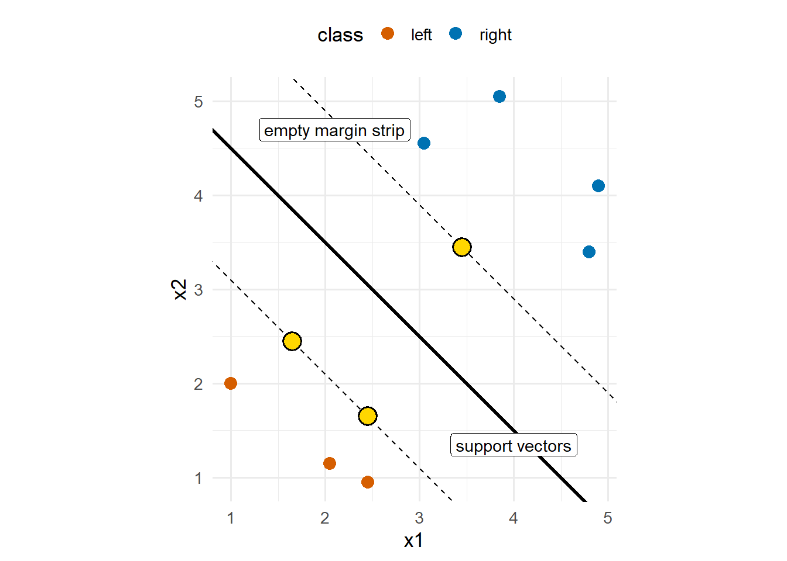
3.4 The Convex Hull Approach
Another way to think about the maximal margin classifier is through the perspective of convex hulls which makes the dual optimisation problem more intuitive. A convex hull is the smallest convex region containing a set of points. (See the appendix for a fuller explanation)
The process for finding the maximal margin classifier can be viewed as
- finding the closest pair of points, one on each class’s convex hull
- connecting pair with a vector, which is normal to the separating boundary
- placing the optimal boundary through the midpoint of this hull-connecting vector
For each of the connecting points of the two hulls, the points are defined by a weighted average of observations from its class. These observations are the support vectors since the boundary is determined by the nearest points between the two class hulls, and these nearest points are defined by the support vectors. This idea is illustrated in Figure 3.3.
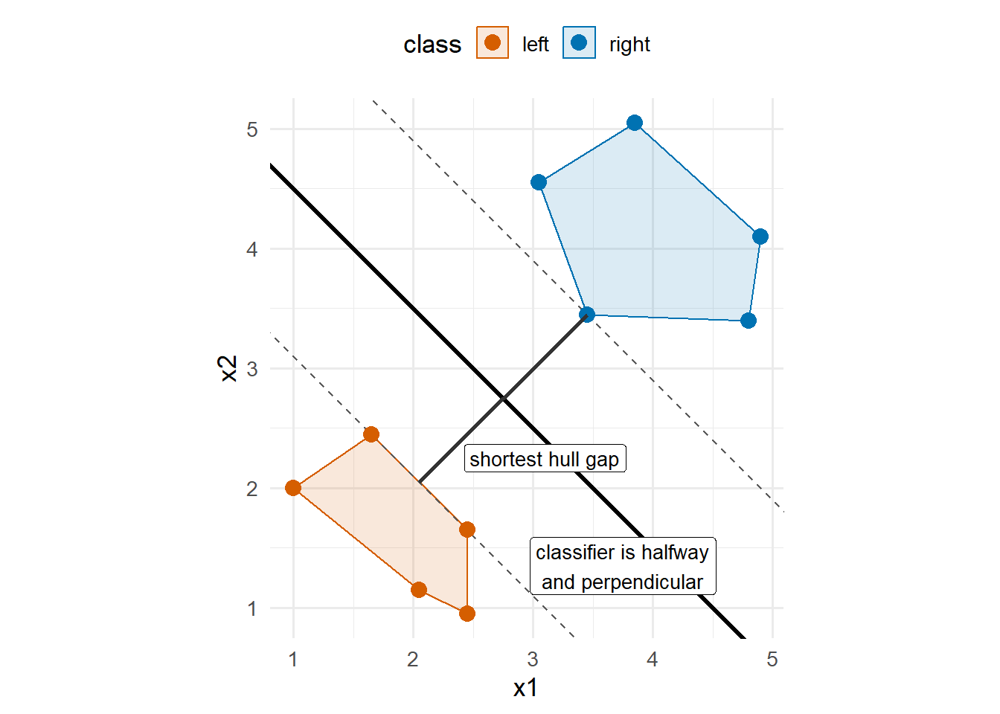
3.5 Another Dimension: Does it still work?
Consider the following 3D example. In the two-dimensional projection illustrated in Figure 3.4, we can see that the two classes are not linearly separable, there is significant class overlap. With our current mechanics, the data appears to be incompatible with the SVM approach.
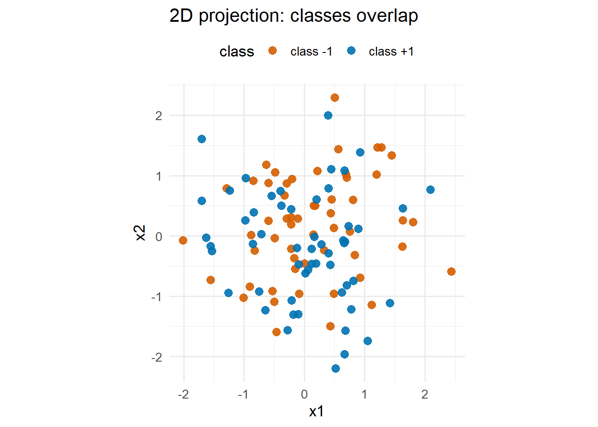
However, once we include a third predictor, the same observations are easy to separate linearly with a plane.
After adding the third predictor, an interactive 3D view shows a simple separating plane at \(x_3 = 0\).
Nothing conceptually new happens in three dimensions. A line in 2D becomes a plane in 3D, and more generally a hyperplane in \(p\) dimensions. The same margin logic still applies and the mathematics we established above is generalised to any dimension.
3.6 R Example: Separable Iris Case
Let us use the Iris dataset to illustrate the maximal margin classifier process in R. We will consider subsets of the Iris data that give a clean first look at thresholds, support vectors, and the fitted margin.
For this example, we keep only two species so that the example is genuinely binary.
Show iris setup code
library(ggplot2)
library(e1071)
data(iris)
iris_bin <- subset(iris, Species != "virginica")
iris_bin$Species <- droplevels(iris_bin$Species)
table(iris_bin$Species)3.6.1 Find the 1D maximal margin boundary using Petal Length
Let us begin with the easiest case, one dimension. Analysing the data, it is clear that the classes are separable with just Petal Length. Here, the decision boundary is just a threshold value which completely defines the classification decision rule.
Show 1D iris threshold code
threshold_info <- data.frame(
max_setosa = max(iris_bin$Petal.Length[iris_bin$Species == "setosa"]),
min_versicolor = min(iris_bin$Petal.Length[iris_bin$Species == "versicolor"])
)
threshold_info$threshold <- mean(c(
threshold_info$max_setosa,
threshold_info$min_versicolor
))
ggplot(iris_bin, aes(x = Petal.Length, y = 0, color = Species)) +
geom_point(size = 3) +
geom_vline(xintercept = threshold_info$threshold, linetype = "dashed") +
labs(title = "1D separation by threshold", y = NULL)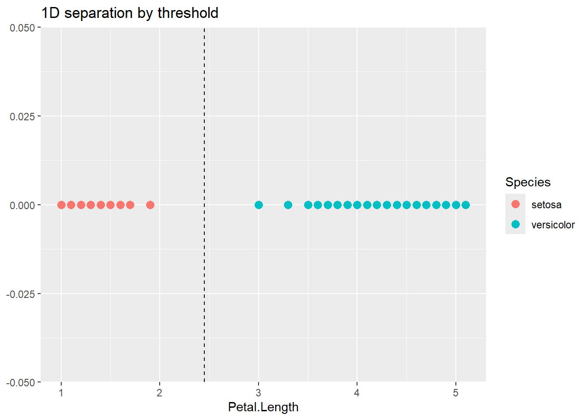
3.6.2 Expand to 2D classification by including Petal Width
The two-dimensional version is closer to the SVM geometry we have spent a lot of time on: a threshold becomes a line, and the margin becomes a parallel strip around that line. Figure 3.5 shows that the 2D subset is linearly separable. Now we need to see how to find the optimal boundary.
Show 2D iris plot code
p2 <- ggplot(iris_bin, aes(x = Petal.Width, y = Petal.Length, color = Species)) +
geom_point(size = 3, alpha = 0.8) +
labs(title = "Scatterplot of Iris subset")
p2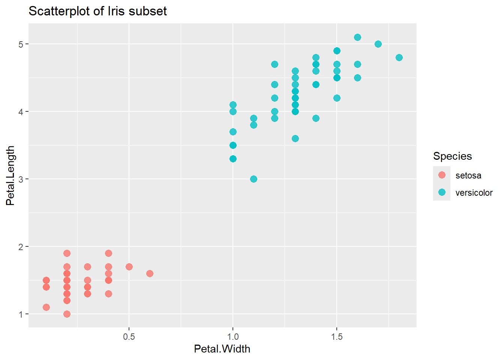
3.6.2.1 Fit the Linear SVM
To fit an SVM model to the data, we utilise e1071::svm. The function expects:
formula: identifies the classes and predictors for the model. (Can usexandyinstead of the formula approach)data: the dataset which the model references.type: the SVM machinery has been extended to more than just classification. In this course, we discuss theC-classificationtype. This is the default type if the response variable is a factor.kernel: this will make more sense in chapter 5. Until then, we utilise thelinearkernel.scale: whether to standardise the preidctor variables before fitting the SVM.cost: this will become clear in chapter 4. If you want to use a maximal margin classifier, then set a relatively large cost.
The fitted model identifies the support vectors in addition to the characterisation of the optimal boundary.
Show SVM fit code
svm_model <- svm(
Species ~ Petal.Length + Petal.Width,
data = iris_bin,
type = "C-classification",
kernel = "linear",
scale = FALSE,
cost = 10
)
pred <- predict(svm_model, iris_bin)
data.frame(
training_accuracy = mean(pred == iris_bin$Species),
support_vectors = length(svm_model$index)
)3.6.2.2 Inspect the Support Vectors
Recall that the support vectors are the observations that lie on the boundary. They are the points that determine where the final separating line sits.
Show support vector extraction code
support_df <- iris_bin[svm_model$index, ] # This shows the observations from the iris_bin dataset which are the support vectors of the SVM.We can then use this support vector information to indicate which data points are the support vectors.
Show support-vector plot code
p3 <- p2 +
geom_point(
data = support_df,
aes(x = Petal.Width, y = Petal.Length),
inherit.aes = FALSE,
color = "black",
size = 5,
alpha = 0.25
) +
labs(title = "Which observations are support vectors?")
p3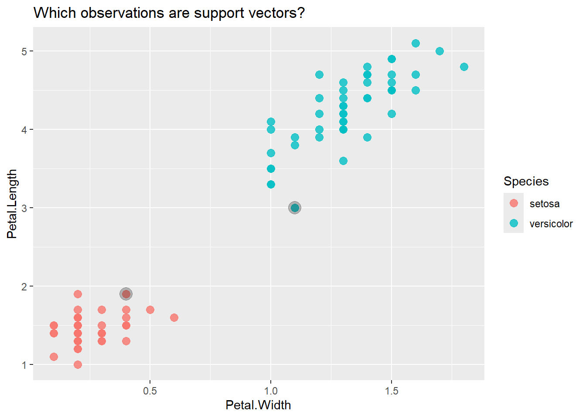
3.6.2.3 Draw the Boundary and Margins
The fitted linear SVM gives a separating line and two parallel margin lines. We can use the SVM information to plot these two lines, fully visualising the 2D maximal margin classification.
Show boundary and margin plotting code
w <- as.numeric(t(svm_model$coefs) %*% svm_model$SV)
slope <- -w[2] / w[1]
intercept <- svm_model$rho / w[1]
p4 <- p3 +
geom_abline(slope = slope, intercept = intercept) +
geom_abline(slope = slope, intercept = intercept + 1 / w[1], linetype = "dashed") +
geom_abline(slope = slope, intercept = intercept - 1 / w[1], linetype = "dashed") +
labs(title = "Decision boundary and margins")
print(p4)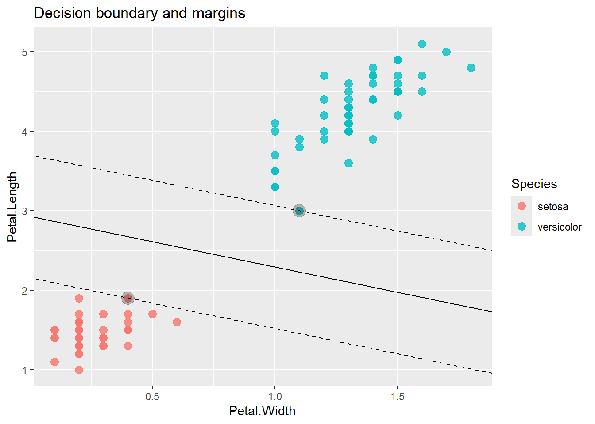
3.6.2.4 Extrapolating the predictions
We can also visualise the classification by plotting the model.
Show model plot code
plot(svm_model, iris_bin[, c("Petal.Width", "Petal.Length", "Species")])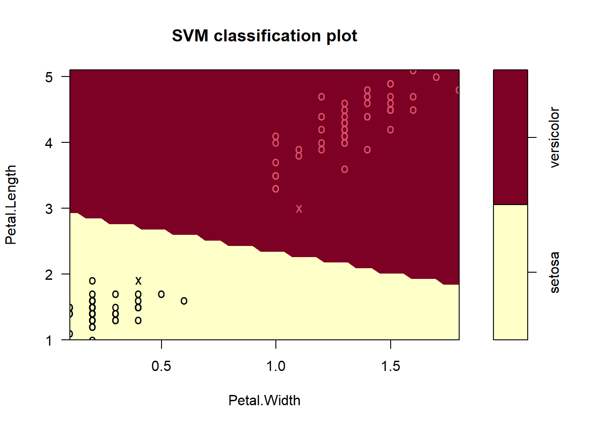
However, due to the resolution of the plot, the boundary line appears rather jagged. We could add shading to our previous plot to show the prediction space a little better (although not necessary).
Show model ggPlot code
# Build a grid over the predictor space
xRange <- range(iris_bin$Petal.Width)
yRange <- range(iris_bin$Petal.Length)
xPad <- 0.15 * diff(xRange)
yPad <- 0.15 * diff(yRange)
gridDf <- expand.grid(
Petal.Width = seq(xRange[1] - xPad, xRange[2] + xPad, length.out = 300),
Petal.Length = seq(yRange[1] - yPad, yRange[2] + yPad, length.out = 300)
)
# Predict the class on the grid
gridDf$PredictedClass <- predict(svm_model, newdata = gridDf)
p4_shaded <- p4 +
geom_raster(
data = gridDf,
aes(x = Petal.Width, y = Petal.Length, fill = PredictedClass),
alpha = 0.15,
inherit.aes = FALSE
) +
labs(
title = "Decision boundary, margins, and predicted regions",
fill = "Predicted class"
)
print(p4_shaded)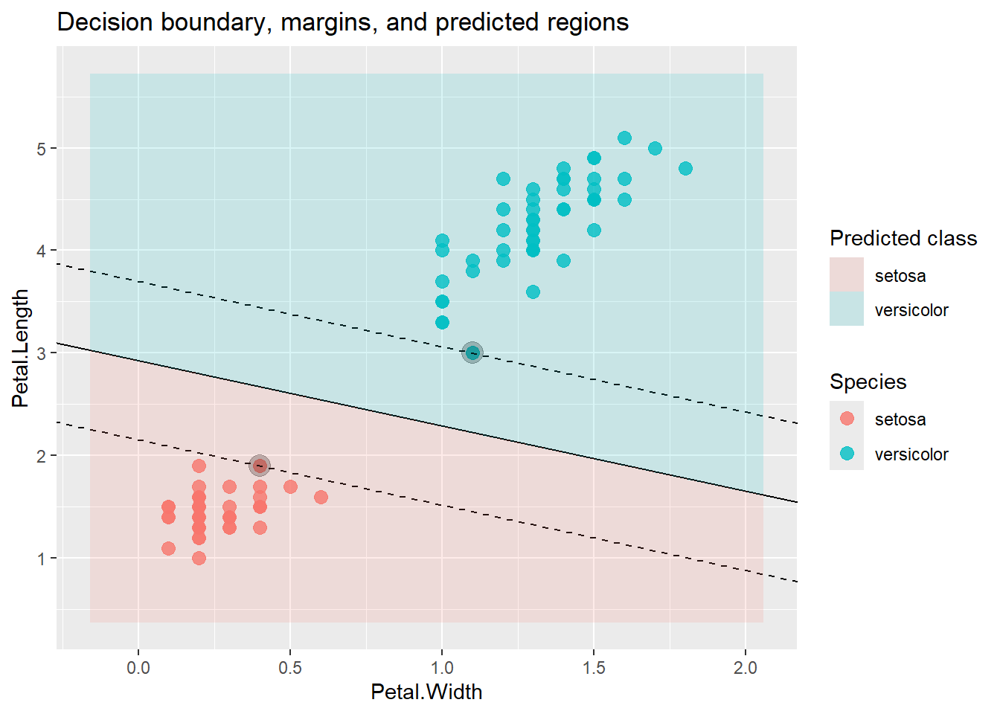
3.7 Takeaway
The maximal margin classifier is the clean starting point for understanding SVMs:
- it is geometrically intuitive
- it shows why support vectors matter
- it motivates the optimisation problem naturally
- BUT it requires perfect separation which is often too restrictive for real data